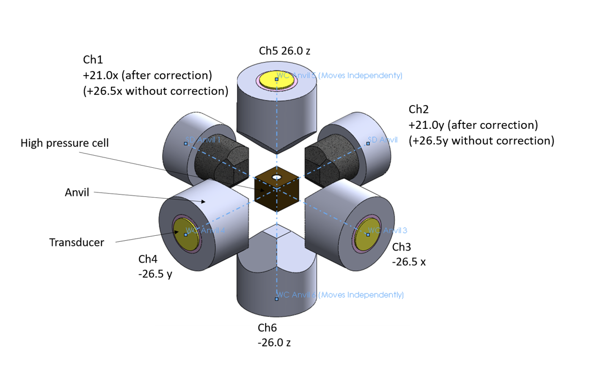

Welcome to the website of
Jack Sheehan
A PhD student at Harvard University studying planetary science.


Welcome to the website of
A PhD student at Harvard University studying planetary science.
IRIS Internship Week 826 July 2021 - 30 July 2021
EqTransformer versus Jack: The Knockout!
After last week's prolonged tussle for power with EqTransformer, I approached this week with a little trepidation. Dr. Peng was back from vacation, I had a little over a week until my first research presentation (more on that later), and I was entering the last phase of my internship. The stage was set for what could be the final battle between me and EqT. I got to work early in order to take one last crack at solving the temporal issue in my data from last week before Dr. Peng got in. I sat at my desk, nervous for what would come next. As I went through the seemingly endless steps required to load Jupyter Notebook on the remote geophysics server, I thought back to my past challenges with EqTransformer. How had I solved them? What approaches had proved the most critical? All of my issues had been resolved when I stopped trying to impose my own organization, and instead worked with what EqT was able to provide. First, it was appending my data files to fit EqT's continuous data requirements, rather than changing EqT's input time frame. Then, it was altering my waveforms' metadata to fit the model, rather than changing how EqT read information in. What was the key this time? It suddenly dawned on me. Instead of recalibrating EqTransformer's eight-day output with the original hour-long experiment, I needed to expand the original experiment time to match EqT. This was much, much easier. Essentially, rather than first identifying which EqT P-pick correlated to which manual pick and then subtracting the time difference, I could simply add the constant length of the wavelength files multiplied by the number of the current file to each manual P-wave. For instance, if a manual P-pick occurred in the 10th waveform file, I added the product of 163.8199 seconds (the length of all the waveforms) and 10 (the file iteration) to the P-time. Now, EqTransformer's P-picks were on the same timescale as the adjusted manual picks, and could be directly collated. Quickly, I opened a new Jupyter Notebook and wrote out a new script, which I've attached at the bottom, along with a description of how it works. As luck would have it, Dr. Peng's entire morning was booked with meetings, so I had been gifted some time. Over the next three hours, I worked rapidly to complete the code. Borrowing from my previous attempts and other scripts I'd written, I was able to get it functioning after only three tries. Just as I finished running the script and outputting a basic Venn diagram and histogram of the results, Dr. Peng came in. Seriously, within 2 minutes of saving the last figure, he came in to check in on me and Mandy. I have never felt so proud in my entire life. And that's the story of how I discovered I want to get a PhD! (Kidding, but this rush of adrenaline definitely boosted my excitement to apply to grad school.) What is the moral of this story? Always procrastinate, you do your best work five minutes before its due.
Papers, Meetings, and Abstracts
Even without the excitement related to EqTransformer, this has been a really good week! First, Dr. Peng suggested Mandy and I could continue to work remotely during the school year to see the project through. This is something I have been seriously considering. I know it would be a lot of work, but I would really like to have some real results for AGU and also beyond. I met with Dr. Peng individually to talk more about it, and he assuaged some of my fears about the workload, while also mentioning the possibility of a paper. To be honest, that got me a little hooked, but I still want to take some time to think about if I can handle the amount of work, and also see if I can get credit through Rice for my research in the form of a senior thesis. All in all, I still have a lot to consider. However, Dr. Peng mentioned I could begin to collect some literature on my topic anyway, just to begin preparing the background of my research in case I do end up deciding to stay on and eventually write a paper. Regardless, I am extraordinarily grateful to have this opportunity, and I'm kind of giddy just thinking about it. Coming into this project, I really wasn't sure if I would like the research. I'm specializing in geophysics at Rice, but I'd never done any computational geophysics work before, or anything even seismology-adjacent. Reflecting on my project, now, though, I realize I really love the work I'm doing. Particularly, I know a paper would give me the chance to see the project through to its application in deep earthquakes, and that's what really interests me.
Another exciting (and nerve-wracking) occurrence was finding out I am presenting at the annual collaborative meeting for all the labs around the world working on this research project. I woke up one morning to an email thread forwarded to me by Dr. Peng, along with the note "Sorry I didn't ask you beforehand, but can you give a presentation on your research at the meeting?" I was honestly stunned. Looking at the schedule, it's just me and Qiushi from Georgia Tech, and I'm the only undergrad presenting at the whole conference. In total, it's going to be a 6-hour affair on Thursday, August 5th, and I am expected to give a 15-minute presentation on "Using Machine-Learning to Automatically Detect P-Waves for Acoustic Emission Events Under Laboratory Conditions." I'm equal parts anxious and ecstatic, but I don't have much time to revel in it! I have to start preparing my presentation immediately and generate more figures. Dr. Peng said it will be a good practice run for AGU and that it will be relatively informal, but the meeting's full title is: "Annual Workshop of FRES Collaboration. The Mechanics of Intermediate Depth Earthquakes: a multiscale investigation combining seismological analyses, laboratory experiments, and numerical modeling." You're telling me that doesn't sound extremely formal?? Anyway, I'm nervous! Hopefully I'm able to finish up compiling my EqTransformer results for all my stations in the next week so that I can have at least one step of my project entirely complete.
Finally, after getting feedback from every single one of Dr. Peng's grad students, I have an acceptable draft of my AGU abstract completed! I say an acceptable draft because it is still very much a draft, but also it's acceptable because if I had to submit it right now, the Earth would probably continue orbiting the sun. Probably. On Monday I'm going over it with Dr. Peng once more, and then sending it to the postdoc and professor at University of Chicago who are also coauthors on my abstract due to their role in the experimental procedure. Wish me luck!
EqT Code, Explanation, and Figures
After the script has run, I am left with a collection of time differences for related EqT and manual P-wave detections, which I can use to depict how accurately EqT identified the manual picks, including how many of the events it detected and how far off the picks were time-wise.
The two figures below were created using the results from the code above. The histogram displays the collection of time differences between EqT's P-picks and University of Chicago's manual P-picks. As you can see, the time difference is very small, and the range is very centralized. The Venn diagram shows the 3901 P-waves identified by human analysts and the 6136 P-waves identified by EqT, as well as the significant overlap of 3615 picks that were identified by both (meaning they were within 0.05 milliseconds of each other). It is the time differences of these 3615 picks that were used to create the histogram.
IRIS Internship Week 719 July 2021 - 23 July 2021
Weekly Updates
Dr. Peng was on vacation this week and I'm not going to lie, it did sort of feel like when the parent leaves the kids home alone. (Should Mandy and I have thrown a party??) Before I get into the weekly updates, here are just a few random comments:
EqTransformer versus Jack: Round Two
Alright so now the real stuff! EqTransformer was a little worse-behaved this week compared to last week. On the surface, I'm still at the same point that I was a week ago: I've run the entire appended dataset for one of my six stations, and I'm trying to compare it to the human picks for the same times. However, I've discovered a flaw in our use of the appended data file as a substitute for real continuous data. It's a little confusing, but I'm gonna lay it all out here. Basically, the experiment only ran for just over an hour. The stations recorded the data continuously, but returned as both continuous and event-trigger files. Event trigger files are supposed to help decrease the amount of time real people have to spend pouring over the data. Each time the system detects what it thinks is an event in the recording, it helpfully cuts a 163.8199 second file around the event that we can then go look through to pick P-waves, characterize the event, filter the data, etc. These events can happen practically on top of each other, so if two events occurred five milliseconds apart, the system returns two 163 second files with start and end times that are also only five milliseconds apart. BUT, when we appended the files to run them in EqT, we combined them one after another, as if the times did not overlap. So, while the actual start times for two events could be just five milliseconds different, EqT thinks they are 163 seconds—a full file length—different. Therefore, we end up with EqTransformer results that say the events occurred evenly spaced over an eight day period, rather than practically all at once for one hour. This makes it impossible to compare the human picks to EqT's picks, since they occur at seemingly completely different times. Qiushi suggested using the number of data points instead of time, but EqT doesn't output the data point information with each pick—just the time. I have spent the last two days trying to write a function to rectify the times and/or get EqT to return the data point number of its P-picks, but I have not made any progress yet. Dr. Peng gets back on Monday from his vacation, and I hate to immediately drop this on him but I'm going to have to. "Hope your vacation was great. ANYWAY..."
The Guts of EqTransformer
To finish this blog post on a slightly more positive note, I learned a lot about the inside workings of EqT this week. From trying to display things it doesn't automatically display, to trying to remove things it displays that I don't want, I've gained a lot of knowledge about how big-time python packages like this are built. While I'm still working on outputting the data point number of P-picks, this week I did successfully manage to get my plotted P-pick/event detection graphs to look exactly how I want them to!! This felt so good because I got to dig through the system utilities folder of EqT. It was mostly trial and error, where I'd delete a line of code, run the script on a short chunk of data, and then look and see how the graph changed. I probably did this over 50 times, and when it was all done it was so satisfying to go through and close all the windows with my intermediate graphs. On the left below is a look at how EqTransformer started off displaying my data originally, and on the right is how it looks now. At first glance, it may look like I've just made it smaller and less impressive, but really I've whittled it down to just the important pieces I want to focus on! The changes I've made are:
IRIS Internship Week 612 July 2021 - 16 July 2021
Exploring Atlanta
This past weekend was really the first time I explored Atlanta! I've been planning to do it for ages, but with the internship and the Seismology Skill Building Workshop, I've been so busy the time has really flown by. This Wednesday was actually my halfway point in the program. That's simultaneously exciting and nerve-racking. Michael keeps saying that our progress is logarithmic, so we're just now going to start seeing the real results. This week helped solidify that in my mind. Outside of work, my girlfriend Shruti came to visit me for the weekend! It was really great to see her and show her around ATL. Plus, I finally had an excuse to do all the touristy stuff. But first, I had to show her the lab so that she could visualize what I'm talking about nonstop. We went to the Georgia Aquarium, shopped at Ponce City Market, and checked out some local coffee shops. (If you're in Scottdale, check out Atlanta's Best Coffee - it's a super cool Eritrean shop that has amazing coffee and does not charge for different flavors!) The aquarium here is the largest in the world by number of animals. The objectively coolest exhibit is probably the whale sharks, but my favorites were the jellyfish and the penguins. (The jellyfish because they were so mesmerizing, and the penguins because they're penguins.) Unfortunately, the penguin exhibit was partially closed, so we couldn't crawl through this little tunnel that lets you stand up right next to the penguins at ground level. Still, it was a lot of fun, and I would definitely recommend it! We didn't do the World of Coke because it just seemed kind of meh, but if they had a World of Dr. Pepper.........
On Sunday we got dinner with our friends from Rice, Thomas and Sanika. Below is a picture of me and Shruti, courtesy of Sanika. Then, after Shruti had left on Monday, I ran into Sanika and Thomas again completely randomly while at work! Mandy and I just happened to pick the same restaurant for lunch as they did, and it ended up being one of those really unexpected interactions that just brightens your whole day. Mandy and I also got to try Ramune there, and we had way too much fun slamming the glass marble into the bottle to open the drinks. Back at the office, Lindsay and Dr. Peng voiced their opinions of our lunch choice, saying it was "Fake asian food," and "Better when I got here 15 years ago," respectively. (We both liked it - oops!)

At Work
Now, on to the research! This week, I ran the entire length of my data from Station 1 on EqTransformer, using the appended event-triggered files Qiushi and I made a few weeks ago. This was a significant step, because last week I only successfully ran one single 160-second wavelength. In contrast, this was eight continuous days of data, collected at 50 MHz. In order to run it, I had to switch to the second EqT processing method that runs directly on my mSEED files, as opposed to creating intermediate HDF5 files. This process cuts out the preprocessing step and saves the room needed for the gigantic HDF5 files, but it doesn't allow you to perform the same level of analysis on the data. For my purposes, however, it works perfectly. (Also an aside: my files are actually SAC files, masquerading as mSEED files in name only, but don't tell EqTransformer that!) For the rest of the week, I worked on altering the detection threshold values, removing the S-Wave values from the signal-to-noise ratio, and choosing which predictor model I should use. I eventually settled on a detection level of 0.6 for events and 0.3 for P-waves, compared to the original values of 0.3 and 0.1. I chose this higher threshold because I am using the second predictor model, which is robust against false-negatives. To counteract this, I raised my threshold levels in order to only output events that EqTransformer is 60% sure exist. This combination seems to work pretty well for my dataset. With these settings, EqT detects about 4800 events compared to the 3900 picks that real people identified before I started this project. This feels like a reasonable starting point. I've attached two of the plots EqTransformer automatically returned upon finishing the prediction. The first shows the number of events the station detected at each time frame, and the second is a standard helicorder plot with the events highlighted. It's difficult to see any details at this scale, but it shows the overwhelming number of events and their relative temporal locations quite well. While I don't have much more to say about this week, my work went well and I feel very satisfied with my progress heading into next week. Hopefully the progress stays logarithmic and it gets even better!
Besides my project, on Wednesday I had the opportunity to watch the interns at Georgia Tech's School of Earth and Atmospheric Sciences present their research. (I also applied to that program, but they didn't accept me. Now I'm in a longer, more extensive, and better-paying internship. Their loss!) The projects they presented were super interesting, and I loved seeing such a wide breadth of research. After every single student's project, I was ready to commit to studying their topic in grad school. I know I definitely need to tone down my enthusiasm, or else I'm going to end up applying to a hundred programs! The project that stood out to me the most was about the importance of including accurate ground modeling in glacier models. Also, I got to view the presentation mentored by Dr. James Wray—the mentor I applied to work with for the GT EAS internship program. It felt a little surreal watching another intern present the project I most likely would have been working on if I had interned there instead of with IRIS. All I can say is, I'm so much happier here!! I wouldn't trade my internship for anything.
IRIS Internship Week 55 July 2021 - 9 July 2021
Weekly Updates
This week was all about three tasks. First and most importantly, get EqTransformer to work! Second, present my research so far to the rest of the IRIS cohort. Third, start using Jupyter notebook. Through all these tasks, I have felt the most successful I have so far in the program. This feels really great, because I am finally starting to see all of my learning coming together. I mean, I didn't even know what bash was when this internship started, and now I can comfortably navigate around a computer without a mouse at all! Plus, I'm beginning to ask better questions. I ask questions constantly—at least 5 times a day—to various people in the lab. (Shoutout to Qiushi, Lindsay, and Mandy for being the best and always stopping to answer them!) Looking back at the type of questions I'm asking, I recognize that I've progressed from confusion to curiosity. I can't stress enough how happy this makes me!! I finally am starting to feel like I belong in this internship program.
EqTransformer versus Jack: Round One
This week I had a major victory against EqTransformer. I say 'against' because man has it been a battle, and I really do feel like it's me or the machine at this point. (Just saying, if it comes to it I can just pour a glass of water on my laptop and EqTransformer will be dead, so it better start behaving.) As I've explained before, my data is pretty different from that of usual seismic stations, from the orientation, to the scale, to the number of data points. Last week and into the beginning of this week, my approach was to try to change the model to work with my code. I went into the settings directory, into the model utilities directory, and even into the actual python scripts themselves that make it work. I changed numpy array sizes, data chunk time parameters, and more. I felt like a hacker! Unfortunately I was an unsuccessful hacker, and every time I ran the code, EqTransformer would spit back an error. First it was a list index error, then a string index error, then a tensorflow error, and so on. Eventually, after a long and very helpful conversation with Qiushi, I decided I needed a new approach.
It turns out I was a hacker! In fact, I had hacked the package into pieces and beyond repair. So I reinstalled EqTransformer and decided this time I would alter my data to meet the requirements of the model. Once I made this switch, it only took me two days to get it working! I recognized I couldn't risk altering the huge data files that I'm working with, and they take too long to run to do trial and error anyway, so I grabbed one individual event file from each of the six stations and loaded this data. Since then I was only running 160 seconds of data, the model processed it almost instantly, and I was able to troubleshoot much faster. This is when I did something entirely on my own for maybe the first time in the internship. I was stuck on a new error, an UnboundLocalError. Some quick googling revealed that this meant I was passing an empty array into Keras (the python deep-learning interface), which meant it couldn't be read. I decided to check how EqTransformer pulled data from the file. A requirement of the model was that your file follow the IRIS naming convention: GS.CA06.00.HHZ__20190902T000000Z__20190903T000000Z.mseed, so I had assumed it pulled network info from here. However, it turns out the model pulled network and channel info from the metadata, which was empty in all my stations because they weren't real stations!! I wrote a script to add fake metadata into these files that matched the fake data I had in the file name and the station list json file I had created. Then, finally, EqTransformer worked. It worked!!! I'll never forget the first time it worked—it felt so good. The rest of this week I spent altering the model's detection thresholds and probability parameters to return an appropriate number of events. So, even though I've only run the package on one single 160-second experiment, I have made enormous progress!
Presenting
On Wednesday at around 3 PM, I realized I hadn't even begun making my slides for the IRIS meeting the next day. I spent the rest of the day rushing to make some figures, but I went to bed that night feeling pretty unprepared. I worked most of Thursday morning prepping my slides, but my chief concern was that I just didn't know enough about the software or the technical details of the experiment. Once the presentations started, though, I suddenly realized we were all in the same boat. Seemingly everyone floundered a little bit when it came to specific questions, and everyone was pretty much just getting into the meat of their work. I left that meeting feeling much more reassured about the progress I have made in Dr. Peng's lab so far. It was a badly-needed reminder that everyone in this program is in college and not expected to be an expert in the field. Perspective is important! Also, I really like the other interns in the program. They seem very down-to-earth and fun. I wish we got the in-person week at the beginning of the program to get to know each other, but I'll see them at AGU!
Jupyter Notebook
Lastly, I would like to issue a public apology to Jupyter Notebook.
Dear Jupyter Notebook,
Earlier in the internship I ranted against you, but I didn't know you. Now I do. You're the best way to code in python, upload/download to a remote server, and view images. Without you, I'd still be pressing the up arrow to find my earlier commands to rerun EqTransformer, or using a convoluted two-hop system to send code to my home computer. I'm so sorry I didn't believe in you, but I will spend the rest of the summer championing you to others. I hope you can forgive me, Jupyter.
Love,
Jack
IRIS Internship Week 428 June 2021 - 2 July 2021
Weekly Updates
After learning all about EQcorrscan last week from Clara, this week I got a tutorial on EqTransformer from Lindsay. I'd heard a lot about Lindsay from everyone in the lab, so it was super awesome to finally meet her! She is so kind and patient, evidenced by the fact that she spent three hours troubleshooting a tutorial with me and Mandy that was supposed to only last an hour. EqTransformer is a deep-learning algorithm that identifies earthquakes using a trained model to pick p-waves, s-waves, and detections, as well as identify the probability of each component. Deep-learning is important because frankly there is just too much data out there for seismologists to pick through. As Qiushi explained it to me, we may identify one larger event in an area of the Earth, but miss 10-15 smaller ones within the same region that get drowned out. While these may not seem important in the grand scheme of things, these foreshocks and aftershocks are often important indicators of the cause of the 'quake. However, when you're sifting through thousands of hours of high-frequency data, you just can't find everything. That's where machine-learning comes in: just make your computer do it! (Although I am a little worried about the robot uprising as I sit here literally training a program to be smarter, but that's a problem for the next generations.)
As the three-hour tutorial with Lindsay would suggest, EqTransformer has been kind of difficult to get a grasp on. One reason for this is that it is a new package, and there are frequent updates. For instance, in the time between Mandy downloading the package and me downloading it, an update came out that made some of my commands defunct. Also we (Lindsay) found a couple small bugs that we (Lindsay) submitted to be fixed. Another reason it's been difficult to get going is my dataset. EqTransformer has been trained on actual earthquakes with real seismogram data, which I don't have. So as I watch Mandy download data successfully and run it through the algorithm, I have continued to troubleshoot. A quick refresher on what makes mine different is that I have six extremely sensitive stations just a few millimeters from a three-millimeter-tall cylinder of Mg2GeO4 that they blast with lasers. Not exactly your typical earthquake scenario! Consequently, my data is much more precise and at a much higher frequency.
My First Figure!
Last week I posted the very detailed diagram of the experiment from the University of Chicago lab, but this week I am posting my own rendition to help visualize the experiment! It definitely isn't nearly as good as theirs, but its still my first baby figure, my firstborn, you might say. (What?) In it, the red circles are the stations and the blue circle is the sample of Mg2GeO4. There are two stations on each of the x-, y-, and z-axes, all roughly 20 mm from the sample. The size variations in the stations represent how many events each station detected in the single experiment I have run so far.
Dr. Peng is luckily not quite as sentimental about my figure, so he was able to offer some constructive feedback, including:
I'll make these changes, but I'll always have a soft spot in my heart for this first version. I'll never forget you, irisfig_D2530_0491_stadist.01.png (pronounced 'Kyle').

IRIS Internship Week 321 June 2021 - 25 June 2021
Weekly Updates
This week has done so much for my self-confidence in the lab! I saw the dataset that I will be working on for the rest of the summer for the first time, and I am finally comfortable navigating the remote softwares and servers in Dr. Peng's lab. It has been a slow start for sure, but a very comprehensive one. This week, I got a tutorial on template-matching techniques from two of Dr. Peng's grad students, Qiushi and Clara. Interestingly, Clara was also an IRIS intern in Dr. Peng's lab as an undergrad. It's very motivating to see real examples of interns benefiting from their experiences or getting offers. Also this week, I spent a day learning how to use Jupyter Notebooks. They're something we've had in classes before, but I've always sort of done just enough to avoid having to really understand what they are and how they work. I've just always had a feeling I probably wouldn't like them. Now that I actually know how to use them, I can say with certainty that I do not like them. (They're actually very handy, but opening my notebooks through the Geophysics server here requires three different passcodes on three different computers, so I will be filing my Jupyter knowledge away for another time.)
Looking forward to next week, I'm starting to plan for my next coding project. After spending much of last week developing my p-wave arrival time code, this week was all about repurposing it for my actual data set. I'm going home this weekend with the goal to figure out how to apply the code more generally to continuous waveform files, in order to prepare for data manipulation on my actual dataset next week. The biggest issue I've run into with this is that the data files I'm working with are too big for my computer to handle. In fact, they're too big for me to even download into my own directory on the geophysics server at Georgia Tech! Because of this, I have to create some python code to read very small chunks of the continuous data into my directory. How do I pick the chunks? Template matching! Using an obspy function called EQcorrscan, I should be able to identify events within the data without having to download it. Then, I'll be able to take those smaller, more manageable packages and identify p-wave arrivals and all that fun stuff.
Before the internship, I'll admit I was concerned about what kind of intern I would be. Would I be a counts-down-the-seconds-till lunch kind of intern? A struggles-to-wake-up-on-time intern? It turns out, I am a will-forget-to-eat-or-go-home-because-the-work-is-so-fascinating intern! This is honestly a huge relief. (But also I do need to be better at regulating my schedule so I have healthy meal times and work hours—one of my summer goals!) Already, I've definitely learned about myself and how I handle pressures and problems that are not school-related. This has been really good for me, because even in areas I've struggled, I now know how to improve. One of my biggest life deficiencies coming into this program was my lack of experience outside of school. I couldn't really picture myself at a job, but now I'm starting to be able to! Also, at the bottom of the post I've added a picture of my workspace and a cool penguin I saw on the wall in one of the hallways here! (If you look closely you can see my co-intern, Mandy, in my workspace picture.)
Looking Forward
As part of IRIS, we have weekly assignments and cohort meetings on various topics. This week's meeting was presented by our resident grad student advisor, Em! They were amazing, helping paint a realistic picture of grad school, getting us excited, while also cautioning us on what we need to know ahead of time. They gave us advice on when and how to reach out to prospective advisors, what type of positions we should be looking for, and overall just gave us a lot of confidence going into this process. Grad school is scary and Em's presentation really made me feel better.
This week's assignment from IRIS was to create an elevator pitch. I thought this would be easy, but it was actually really difficult! I already had an elevator pitch recorded from a competition at the Houston Students in Geosciences Expo last year, but when I rewatched it I did not like it at all. Looking back, it felt like I was just reading my resume, which is not at all what I think an elevator pitch should be. I want my elevator pitch to be something that people associate with me. It shouldn't cram every little detail about my experiences in, but should show who I am. It's more of a personal statement than anything else. I'm looking forward to continuing to refine it ahead of AGU, where hopefully I'll get to give it to a few potential grad school advisors! I think besides situations like that, it will also be beneficial to me, personally. The work that goes into an elevator pitch will help me figure out how I want to present myself, and what I consider most important about my experiences. If nothing else, it will help me better understand my own story.

IRIS Internship Week 214 June 2021 - 18 June 2021
Weekly Updates
This week was a little bit (lot) more intense than the first. Outside of the internship, I got to go to my first NBA playoffs game (go Hawks!). As far as work goes, I have really been enjoying the IRIS Seismology Skill Building Workshop, especially because whenever I don't know how to do something lab-related I can do a tutorial and still feel productive. So far it feels like over time I slowly, painstakingly learn something new in lab, it shows up on the next tutorial and makes perfect sense. I'm trying to be more ahead of the game on the tutorials now, so that I can hopefully switch this and learn new tools before I need them in lab! My work has ramped up a bit, and I'm starting to write small bashrc, MATLAB, and Python scripts for various SAC files. My big project this week has been writing a script to add 13,884 P-wave arrival-times to SAC headers on various frequency-time plots.
My Dataset
My project is slowly becoming clearer. In a very short summary, I am looking at continuous waveform files from lab experiments that are simulating intermediate-depth earthquakes (IDEQs). Most of my work is processing data, turning it into readable audio files, adding to SAC headers, locating and identifying events, and applying frequency filters to separate data from noise. Really I am just generally assisting in making the data more manageable. Meanwhile, Dr. Peng's lab is attempting to clarify whether these laboratory experiments are adequate representations of IDEQs. As the summer progresses and I learn to understand my data more, my goal is to be involved in this part of the process as well. Besides this, I am working on a side project, which is turning seismic data into extremely slowed-down videos that depict fractures forming while playing audio of the cracking. This really excites me because it's such a different way of viewing earthquakes, and a lot more intuitive than the typical squiggles. I think it will have very large educational applications.
The most important part of my job will be applying filters to distinguish noise from data. The laboratory experiments require the use of electronic equipment placed millimeters from the extremely sensitive sensors, so there is significant noise. Right now, I am learning about the different types of filters, how to automate them, and how to ensure the data I am left with is correct. This data is coming from lab work done at the University of Chicago. Because of this, I do not get to see the experiments happening. While I've seen lots of diagrams and read countless readme files outlining the experiment, it's still a little confusing. A funny moment was on Monday, when I asked Dr. Peng why two machines were placed closer to the sample, and the ensuing conversation confused both of us to the point he emailed the lab PI at U of C to ask. In Dr. Peng's words, "Qiushi (his grad student) and I had this exact same conversation yesterday and we determined that it made sense, but now that you ask it again I'm unsure." Here is a diagram of the experimental setup:

Reflection
IRIS provided us with a self-reflection guide that covers various skills we can gain this summer, in order for us to evaluate ourselves before and after the internship. Looking at the list of skills, I believe the most important skill I can gain this summer is the ability to analyze and evaluate research results. I am good at processing data. Give me a project to turn one thing into something else and I will find a way to make it happen. (Hey, code doesn't have to be pretty, right?) Projects like these always have an end goal that I am aware of. I know what my completed product should look like or do. However, research at its core is about the unknown, and those in charge of the larger project don't have the luxury of knowing the end result—that's what they're trying to find. This summer, I would like to take a step towards this mentality. How do you approach a problem without any idea of its answer? Therefore, along with my data processing work, it is important for me to look forward to the potential results. I know I am not a lab PI and this isn't really my problem to worry about, but this is a critical component of research and one that I want my final poster to accurately reflect.
IRIS Internship Week 17 June 2021 - 11 June 2021
My First Week
This week I started my internship in Dr. Peng's computational geophysics lab at Georgia Tech. On Sunday I made the 9-hour drive from STL to ATL, and moved into the apartment above the garage of my dad's house. I was a little nervous about this living arrangement at first, but it's actually been very nice. I am able to operate on my own schedule, but can still see my little brother and my dogs when I need to destress. The only thing I've had trouble with so far is waking up in the morning, but that's nothing new! Overall, the transition to Atlanta and working life has been easier than I thought it would be, if not perfect.
Due to covid, the entire lab seems to be in a state of transition. Most members are still remote, which has been a blessing and a curse for me. On one hand, it has given me lots of time to work with Dr. Peng one-on-one, and I have not been overwhelmed with new names and faces. On the other hand, however, I have not yet met any of the other lab members I will be working with. Also, the FIRE ALARM went off on my very first day!! As we walked out, Dr. Peng shared an anecdote with me about a previous fire alarm, when some professors got caught hiding behind their desks trying to continue getting work done, and every time I picture this I laugh. For my work in the lab, Dr. Peng introduced me to something he calls "Earthquake Music" which is basically a way of depicting the acoustic measurements his lab is recording. I find this so fascinating, since it's such an extreme break from the typical squiggly line graphs you see from seismometers, and it really emphasizes the power behind 'quakes! So far, I've been able to take some example Seismic Analysis Code (SAC) and transform it into readable .wav files. The first time I played the file on my computer, it was extremely quiet so I turned my volume all the way up and leaned in. All of a sudden, BANG!!!! the AE signal blared through my speakers. That's a mistake you definitely only make once. Other than that, this week has been about getting logged into the various servers, getting access to the building, and other administrative stuff. It's definitely been a slow start, especially as far as learning new concepts goes. However, that's largely because Dr. Peng is saving most of the project introductions for when the other IRIS intern, Mandy, gets here next week. I'm very glad I ended up in one of the sites with two interns, if only so it won't just be me learning everything for the first time around a group of seasoned seismologists. (Also I want someone to explore Atlanta with, so hurry up Mandy!!)
Goals for the first third of the internship:
This is my first internship, so I want to use this chance to adapt to life outside of school. I am looking forward to better understanding what a job in this lab looks like, as well as just getting used to pulling a regular 9-5, packing my lunches, etc.
Goals for the second third of the internship:
After I've had some time to adjust to the lab setting, I want to drastically improve my coding. To be completely honest, when Dr. Peng was getting me set up with remote access to the servers using ssh, I had to look up how to open terminal on my mac....... The only real coding experience I have is with MATLAB, and even then it's more that I have memorized and can regurgitate simple commands. I want to understand why I do certain things, plus really know what they are doing.
Goals for the final third of the internship:
Finally, after having almost two months to get comfortable in the lab environment and with coding, I want to take on a bigger role in my project. By this point, I will be thinking about my AGU presentation, and this is something I want to be proud to present as my own. It's not enough to be given some instructions that I blindly follow; I want to own my research that I present. Therefore, for the final third I really want to be in control of where my project is going, and decide how to interpret and present my findings.
Some final, random goals:
Throughout the summer, I also want to talk to the grad students in the lab about their grad school experience. I want to make connections in this field and at Tech, and I want to understand how people decided their careers. I also want to become better at regulating my schedule, so that I get a healthy amount of sleep, eat at normal meal times, and have time for exercise.